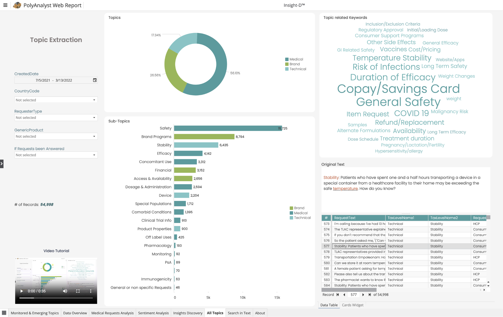

Pharma teams need a faster way to find meaning in large volumes of patient, clinician, and market conversations. Insight-D uses AI to surface topics and emerging trends, then links each finding back to its source text.
Project
Insight-D · PolyAnalyst Web Reports
Time
2023
Role
UX/UI Designer · Product Marketing Specialist
Partners
Data analyst, product and marketing teams
Focus
Data storytelling, dashboard UX, visual design
Platform
Web dashboard
01 / Insight-D
From scattered conversations to useful signals
Insight-D uses AI to identify key topics, monitor known issues, surface emerging trends, and connect findings back to source context. I partnered with a data analyst to shape how those signals could be explored in a clear, interactive dashboard.

Topic extraction — move from a high-level category into subtopics, source text, and individual records.
02 / From questions to views
Each chart answers a different analyst question
In discovery with the data analyst, I mapped the questions people needed to answer to the right visual and controls. The filters let users narrow the analysis by date, country, requester, product, and response status, then move from topic summaries into source language.
☰PolyAnalyst Web ReportInsight-D™
24,739 records
All filters · click a chart to explore itClick any panel to open its details
GEOGRAPHIC VIEW
Requests by country
Select a region to add it to the dashboard filters.
24,739 requests
TREND VIEW
Monitored & emerging topics over time
Toggle a series to compare how topic volume shifts across the selected period.
2021 — 2022
TOPIC BREAKDOWN
What kinds of topics are appearing?
Choose a category to focus the breakdown.
54,998 records
Medical56.10%
RANKED TOPICS
Most frequent subtopics
Choose a row to see the topic count.
54,998 records
Choose a topic to inspect its count.
KEYWORDS & CONTEXT
Explore the language behind a topic
Select a keyword to see a sample source excerpt.
Source-linked
Stability: Patients who have spent one and a half hours transporting a device in a special container from a healthcare facility to their home may be exceeding the safe temperature. How do you know?
03 / Visual exploration
Give each signal its own visual hierarchy
The dashboard pairs spatial, temporal, and ranked views with source language. I explored how color and composition could help people distinguish topic groups without overwhelming the data.
Palette study
One dashboard, three color directions
Switch palettes to compare the tone and contrast of the same chart composition. These are visual explorations for the case study.
Topic volume over time
Topics by frequency
04 / Sharing the value
Make the product story clear beyond the dashboard
I also shaped product communication for a broader audience. This presentation introduces Megaputer’s hybrid AI approach and frames the platform’s value around accuracy, simplicity, and scale.